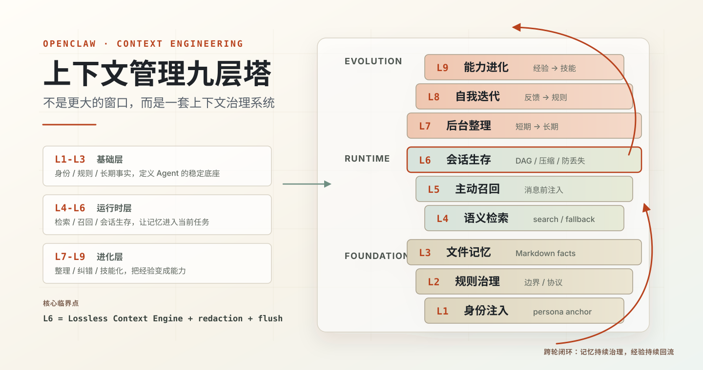

完整的九层塔架构教程，含 4 个核心观点、L1-L9 详解、三层 vs 九层对比、源码层适配最佳实践、14 个最容易踩的坑。补入了从最新运维审计中抽象出的 CLI 输出容错、snippet fallback、主动召回短超时和升级后自愈机制。带目录导航 / 阅读进度 / 自动 light-dark 主题。
报告 v2 的 markdown 源文件。fork / 改写 / 引用都从这里开始。
报告动笔前的素材包：文章定位、脱敏原则、9 层细化模板、上游适配、踩坑清单。理解作者写作思路从这里看。
修复过程中沉淀的可重跑脚本：检索输出容错、摘要前敏感信息清理、目录合并、索引清理、周期任务健康检查，以及升级后自动检查并重打关键适配的 reinstaller 样例。可作类似系统的迁移参考。